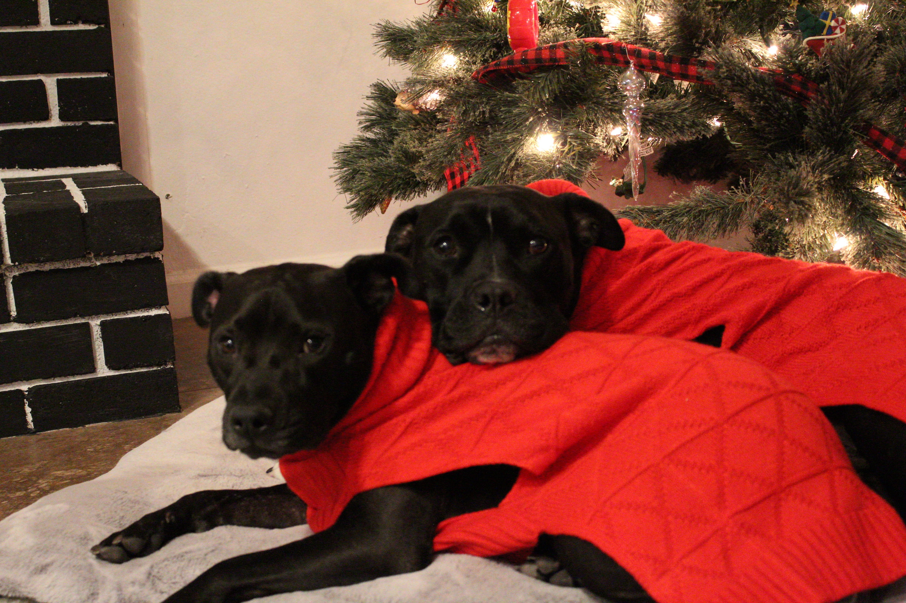

Hello and Welcome!
My name is Jo-anne Liberato. I'm currently a Junior Software Engineer at American Express. Prior to my current position, I was a Certified Pharmacy Technician for 6 years. I took a college course, Intro to Computer Science and fell in love with coding. I knew that I always wanted to go back to coding and learning more about it as well. I stumbled upon Multiverse and was able to apply to American Express through Multiverse's apprenticeship program. I am so grateful for this opportunity to learn more about developing my coding skills as well as getting hands-on experience. I'm a quick and active learner. I'm passionate about developing new skills, all aspects, on a deeper level.
More About Me
-
One of the things I have a profound interest in are Cars. I think they are so interesting and love learning more about them. One of the things that I've always wanted to learn is to drive a manual. I bought my first car and eventually learned how to drive a manual.
-

I also have a love for animals. I have two rescue pitbulls and they are the sweetest dogs. Their names are Bellamy and Hera. Although everyone says they have a bad reputation, I wouldn't trade them for the world.
-

I also love reading books. The best thing in the world is when it's raining outside, while I'm reading with a cup of tea and a good book.
-

I enjoy traveling. Whether I'm driving or taking a plane, it's always fun to explore different places and learn more about the history of each place. I enjoy eating their local food and just enjoying the culture of each unique destination.